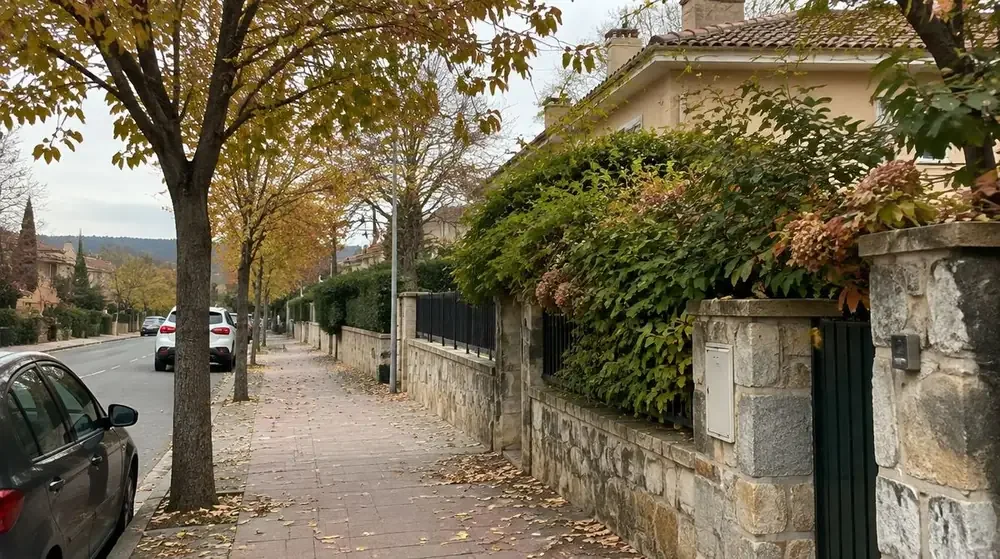
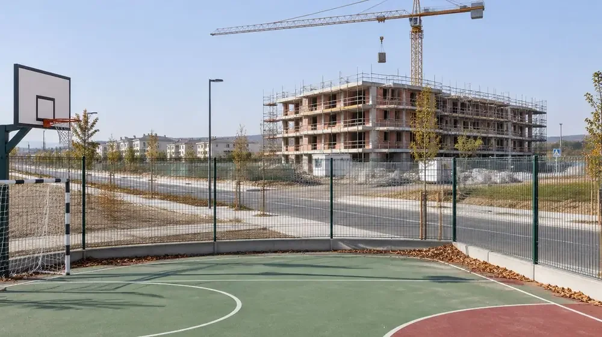

Town guide
Buy · 3-bed flat€500K–€650KBased on 3-bed flats with communal pool, parking space and storage room
Rent · 3-bed flat€1,600–€2,100/moBased on 3-bed flats with communal pool, parking space and storage room
Commute~28 min train · ~25 min car
VibeModern, family-oriented, safe, affluent, green
Check before decidingAbout these ranges. Patrick’s indicative housing ranges, not a market average. Compare like-for-like homes with current sale listings and current rentals.
Best forFamilies who want excellent school choice and open green space, without giving up an international feel and a fast connection to the city.
At a glance
A planned town with school choice and a faster commute, balanced against higher housing costs.
- Best fit
- Families prioritising schools, green space and the train into Madrid.
- Main trade-off
- Flats dominate; a fixed budget buys less space than in Colmenar.
- Before deciding
- Compare neighbourhoods and try the full school run and commute.
Editorial update: 8 October 2026. Fact-check dates are not recorded; confirm changing details with the linked sources.
By Patrick · moved his own family here
Contents Choose a section
We didn't end up in Tres Cantos — not for lack of trying. It's a town where everything is well thought-out and things simply work. The school choice is unmatched, running the full spectrum from public to concertado to private. The facilities are excellent already, and only getting better with the investment landing in the north of town. In the end, it came down to budget: a 3-bedroom flat here, with a communal pool, terrace and storage room, will cost you more than — or about the same as — a new-build house with a garden in Colmenar Viejo. For us, it was a straight choice between the neighbourhood and the house.
The vibe
Patrick’s experience and research
It's striking how much the atmosphere changes the moment you cross from Colmenar Viejo into Tres Cantos. This is a town full of young, often international families. Wherever you end up living, you're almost certainly within walking distance of bars, restaurants, and parks. If you're weighing up the north of town, look into the Parque Paraninfo project — it's shaping up to be a real anchor for that part of Tres Cantos. This is also, notably, one of the more affluent towns in Spain, with one of the highest average household incomes in the country.
Housing: buying vs renting
Check before decidingAbout these ranges. Patrick’s indicative housing ranges, not a market average. Compare like-for-like homes with current sale listings and current rentals.
Prices in Tres Cantos are already high, and still climbing. You're unlikely to spend less here than you would in the city itself — but you do get more for your money: three bedrooms, a communal pool, parking, and, to varying degrees, a terrace.
New-build · to buy
€630K–€700K
New-build · to rent
€1,850–€2,100/mo
For a new-build flat in Tres Cantos North with that spec, expect to pay the ranges above — new-build comfort comes at a premium.
Neighbourhoods: old town vs north
Old town
Established and settled. Walking distance to excellent schools, sports centres, shops, bars and restaurants, and never far from trees or open green space. Closer to the current train station. Flats are older — around 30 years old — but still commonly come with a communal pool, even if the terrace is smaller or absent.
North
Up-and-coming, and already delivering: brand-new tennis courts, an impressive children's park, and a growing mix of restaurants, shops and bars. Also home to Spain's Netflix production studios. Major investment on the way: a new hospital has just opened, a new train station is underway, and the planned Parque Paraninfo will bring a school, library, theatre and culture centre. Right now it's still a lot of building sites — but things move fast. New builds here typically come with aerotermia, a genuine game-changer for a Spanish summer — and all of this is already priced in, so the north doesn't come cheap.
Schools
Check before decidingCheck school types and language options in the official Madrid school directory; see the admissions process and dates.
An excellent range of schools across every type. The public schools are consistently high quality — worth a special mention is Colegio Aldebarán, a rare example of a public school taking a modern, respectful approach to early years education. On the concertado side, Humanitas stands out for its facilities. And for private, international options, you have King's College Soto de Viñuelas (British curriculum) and Casvi International American School (American curriculum, with IB from age 3).
Facilities & day-to-day life
Placeholder · Parque de los Niños
Parque de los Niños — a huge, Scandinavian-style park with bars and restaurants right across the road.

Placeholder · [second park name]
[Second park name] — a large green space with cycling paths, ideal with children, dotted with excellent play parks. There's also a genuinely great Argentinian food-truck style spot to eat right in the park.

Placeholder · tennis courts, north
Brand-new tennis courts in the north, a new sports centre on the way, and good tennis facilities scattered across the rest of the town.
Placeholder · shopping centre
Bike lanes run throughout, and the whole town is unusually walkable thanks to its planned layout. There's also a shopping centre with a cinema.
Getting around
Check before decidingJourney times depend on your destination and departure. Check your trip in Renfe’s current timetable.
The train is excellent, running the full length of Madrid from Chamartín down to Atocha. Within the town itself, bike lanes and walking paths are everywhere. Parking can be a real pain depending on where you need to be in the old town. The drive into Madrid is short outside of rush hour — but at peak times it can more than double, so if that's your situation, take the train.
Pros & cons
Pros
- Exceptional school choice across public, concertado, private and bilingual
- Genuinely family- and child-friendly design — green space, playgrounds, bike lanes everywhere
- Fast, direct train into central Madrid (~28 minutes)
- New builds come with aerotermia — a real quality-of-life upgrade for Spanish summers
- Major infrastructure investment landing soon: new hospital, new train station, Parque Paraninfo
- Safe, walkable, well-planned throughout
- Strong community of young, international families
- Good local amenities, including a shopping centre with a cinema
Cons
- One of the most expensive commuter towns near Madrid, and still rising
- The north is still under construction — building sites for now, not yet a finished picture
- Parking in the old town can be genuinely frustrating
- Driving at rush hour can more than double your commute
- The north's future potential is already priced into today's cost
Is Tres Cantos right for you?
You'll love it here if:
- School choice is your top priority and you want every option on the table
- You're happy paying for new-build comforts like aerotermia
- You want walkability and green space without sacrificing a fast train into Madrid
- You're drawn to a young, international, family-dense community
It might frustrate you if:
- Budget is tight — you'll get noticeably less space here than in Colmenar Viejo for the same money
- You want things finished and settled now, rather than construction happening around you
- You're hoping for a big house with a garden — flats dominate this market
- You're after a slower, more traditionally Spanish pace of life
But what about our situation?
Your move, unpacked €150
You leave with a shortlist that fits your budget, the schools worth visiting, and your next three steps.
One 60–90 minute video call. Bring your questions about Tres Cantos, schools, off-plan buying, mortgages, or anything else — real answers from someone who's actually done this move, not a sales pitch. Need more ongoing support? Ask about that too.
updated · we had this wrong Nothing yet. If something here turns out to be wrong, it gets fixed and listed right here — dated, with what changed.